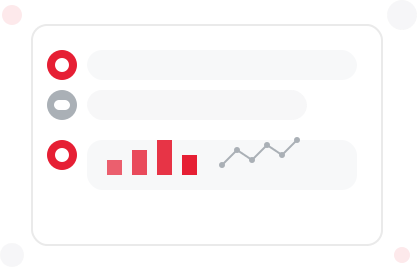

Conversational Analytics
Interact with your data through natural language, revolutionizing how you access business insights
Intelligent Business Assistants
Our AI-powered conversational interface eliminates the need for complex query languages or technical expertise. Simply ask questions in plain language and receive immediate insights.
- Natural language query processing with contextual understanding
- Multi-turn conversations with follow-up questions and clarifications
- Personalized recommendations based on user role and history
- Business-specific terminology recognition and custom vocabulary
- Automated SQL generation and optimization behind the scenes

Team-Specific AI Agents
Create customized AI assistants for different departments and business functions. Each assistant is pre-configured with relevant data sources and domain knowledge.
- Role-based assistants (Sales, Marketing, Finance, Operations)
- Guided analytics with industry best practices
- Scheduled insights and personalized data pushes
- Seamless integration with messaging platforms
- Knowledge management to capture business context